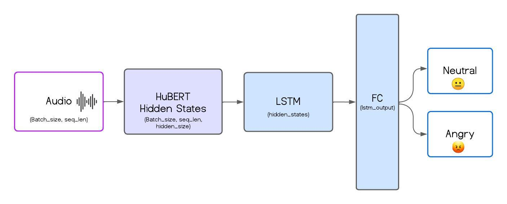

Duration
November 2024
Location
Universidad de Zaragoza
Description
This short project was completed during my Erasmus exchange at the University of Zaragoza.
The Speech Emotion Recognition (SER) project implements a model to classify emotional states from voice signals. The system was trained on the ShEMO dataset, containing 3,000 audio samples from 87 native Persian speakers.
The model architecture leverages HuBERT, a pre-trained Transformer model for feature extraction, combined with LSTM layers for temporal modeling and fully connected layers for classification. This approach efficiently captures long-range dependencies in audio signals, integrating dropout and pooling techniques for improved robustness.

Results
The system achieved 94% precision on binary classification (Angry vs. Neutral) after 10 epochs. These results highlight the model's potential for future applications.
Future Work
Future improvements will focus on multi-class classification and the exploration of advanced architectures, such as attention-based models, Bi-LSTMs, and Vision Transformers (ViT).